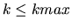
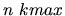

A safari holiday is organized for n people according to the following rules:
- During the safari, the participants are going out every day, in groups of
exactly k persons, to enjoy wild-life watching in deep savanna.
- The number of persons in a group is the same every day and cannot exceed a
maximum value kmax agreed by the safari organizers.
- For any given day, during the safari, each participant is member of a group in that day.
- Each day every person is in a totally new company, i.e. the remaining n-1
persons of his/her group are different from those in the previous days.
- At the end of the safari everybody must have been in the company of everybody, i.e. for any two
participants A and B there is a day, during the safari, such that A and B are in the same
group that day.
For example, for 4 safari participants and for kmax=3 there are 2 groups of 2 persons
each every day and the safari schedule can be as follows:
group 1 group 2
day 1: 1,2 3,4
day 2: 1,3 2,4
day 3: 1,4 2,3
Write a program that, for a given pair n, kmax (the number of safari participants and the
maximum size of the
groups), computes the largest possible size of the safari groups (the largest possible
value of k such that
)
and the corresponding number of days of the safari
holiday.
The program reads sets of data from a text file. Each data set is on a separate
line and has the format: ,
where n and kmax are strictly positive integers, that can have large values. For each data set the program
prints to the standard output the corresponding size of the safari groups and the
number of days of the safari
holiday, as illustrated in the sample below. If the problem has no solution
the program prints the message `No solution'.
Each result is on a separate line.
4 1
4 2
4 3
4 4
No solution
2 persons/group, 3 days
2 persons/group, 3 days
4 persons/group, 1 day
Miguel Revilla
2001-01-05